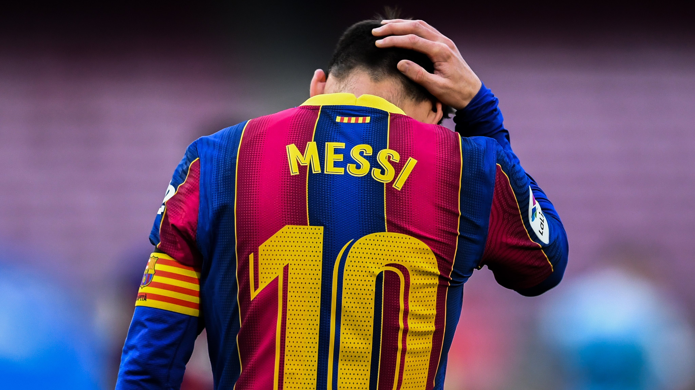

Lionel Messi, cujo nome completo é Lionel Andrés Messi, é um extraordinário jogador de futebol argentino, nascido em 24 de junho de 1987, na cidade de Rosario, Argentina. Considerado por muitos como um dos maiores jogadores de futebol da história, Messi é conhecido por sua habilidade técnica impressionante, visão de jogo e incrível capacidade de marcar gols.
